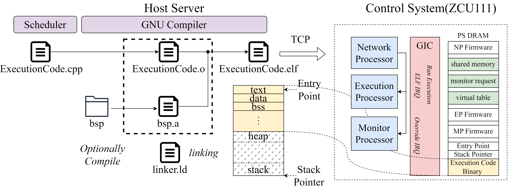

RFSoC-based TIQC Control System

True-arb waveform generation capable fully integrated TIQC control SoC. It has 3 cores: Network, Error, and Experiment Processor respectively. All cores are running in baremetal to remove unpredictable behavior of OS. Network Processor manages commands from the host server where TCP server is running with LWIP. It makes interrupt to Experiment Processor to load binary code which is transmitted from the host server or forcibly stop running program. Error Processor monitors all modules in realtime, and record error signals, or override the signal for each module.
AWG

Typical AWG device lacks capability to generate arbitrary waveform for TIQC, since these utilizes only BRAM. To overcome this limitation, AWG utilizing DRAM is implemented. To prevent unpredictable latency due to DRAM refresh, waveform data is aligned to memory row size, and data transaction is scheduled equally.

AWG latency is calculated theoretically, and it is compared with the measured latency. 900 ns WCET latency is measured with 1 channel, and 2.16 us is measured with 8 channels.
Host Server
User select CPP file through IQUIP GUI, and make schedule to run it on the master server. Then, master find highest priority of schedule, and compile the CPP width GNU compiler. Linker script which is written to run on ELF Runner links all user CPP object file and bsp object file. Then, master send ELF file to ELF Runner through TCP Server.
Automatic Vivado Project Generation


Generate custom IP and connect block diagram automatically based on json meta file Lolenc block diagram is generated by Vivado Project Manager, which includes almost 45 custom IPs.
Ion Trap Two Qubit Gate Pulse Shaping Optimization

Pulse shaping optimization through ADAM algorithm and analysis between experiment data and calculated data